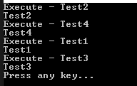

[C#] 54. Reflection機能を使い方 - Attribute
こんにちは。明月です。
この投稿はC#でReflection機能を使い方 - Attributeに関する説明です。
以前の投稿までReflection機能を説明しましたが、簡単に要約するとソースにクラスの割り当てやクラス呼び出すことの静的な方法をデータなどにより動的なクラスを割り当てするか関数を呼び出しする方法です。
実はC#にdynamicタイプがあるし、様々なパターンによりフレームワークを作成するかコアークラスを作成することではなければ別に使うことはありません。
でも、Reflection機能中でAttributeによりクラス区分やメソッド呼び出す方法はすごくよく使います。
link - [C#] 31. アトリビュート(Attribute)を使い方
C#のアトリビュート(Attribute)はメタデータとしての役割だけですが、Reflectionの機能と一緒に使うと単純なメタデータの機能だけではなく、プログラムを制御する機能に使えます。
using System;
// Classタイプのアトリビュート生成
[AttributeUsage(AttributeTargets.Class)]
class DefaultData : Attribute
{
// アトリビュートのフィールドデータ
public String Name { get; set; }
// コンストラクタ
public DefaultData(String name)
{
this.Name = name;
}
}
// Node1クラスにDefaultDataアトリビュートを設定
[DefaultData("Process1")]
class Node1
{
}
// Node2クラスにDefaultDataアトリビュートを設定
[DefaultData("Process2")]
class Node2
{
}
class Program
{
static void Main(string[] args)
{
// Node1クラスのDefaultDataアトリビュートを取得
foreach (var attr in typeof(Node1).GetCustomAttributes(typeof(DefaultData), false) as DefaultData[])
{
// コンソール出力
Console.WriteLine(attr.Name);
}
// Node2クラスのDefaultDataアトリビュートを取得
foreach (var attr in typeof(Node2).GetCustomAttributes(typeof(DefaultData), false) as DefaultData[])
{
// コンソール出力
Console.WriteLine(attr.Name);
}
// 任意のキーを押してください
Console.WriteLine("Press any key...");
Console.ReadKey();
}
}
上の例は簡単にNode1クラスとNode2クラスのアトリビュートを取得する例です。他のReflectionの機能と別に差異がなさそうです。
using System;
using System.Linq;
// Classタイプのアトリビュート生成
[AttributeUsage(AttributeTargets.Class)]
class DefaultData : Attribute
{
// アトリビュートのフィールドデータ
public String Name { get; set; }
// コンストラクタ
public DefaultData(String name)
{
this.Name = name;
}
}
// Methodタイプのアトリビュート生成
[AttributeUsage(AttributeTargets.Method)]
class RunFlag : Attribute
{
}
// NodeクラスにDefaultDataアトリビュートを設定
[DefaultData("Hello world")]
class Node
{
// Print関数にRunFlagアトリビュートを設定
[RunFlag]
public void Run()
{
Print();
}
public void Print()
{
// クラスのオブジェクトのタイプを取得する。
Type clz = this.GetType();
// クラスのアトリビュートを取得する。
foreach (dynamic obj in clz.GetCustomAttributes(false))
{
// アトリビュートの中でDefaultDataタイプなら
if (obj.GetType() == typeof(DefaultData))
{
// 設定のName値を出力する。
Console.WriteLine(obj.Name);
}
}
}
}
class Program
{
static void Main(string[] args)
{
// インスタンス生成
var node = new Node();
// Nodeクラスのメソッドの
typeof(Node).GetMethods()
// アトリビュートのRunFlagがある関数をフィールド
.Where(x => x.GetCustomAttributes(false).Where(y => y.GetType() == typeof(RunFlag)).Any())
// リストで出力した後
.ToList()
.ForEach(x =>
{
// 関数名を出力
Console.WriteLine("Execute - " + x.Name);
// 関数を実行
x.Invoke(node, null);
});
// 任意のキーを押してください
Console.WriteLine("Press any key...");
Console.ReadKey();
}
}
実際にはアトリビュートのタイプで関数の実行可否や順番を設定するところでよく使います。
例えば、ウェブプロジェクトでアトリビュートを設定すれば、接続するユーザの権限により関数を実行するかどうかの検査やデータにより実行順番を設定することなどを設定することができます。
using System;
using System.Linq;
// Methodタイプのアトリビュートを生成
[AttributeUsage(AttributeTargets.Method)]
class ExecuteOrder : Attribute
{
// 順番のメンバー変数
public int Order { get; set; }
// コンストラクタ(必須設定)
public ExecuteOrder(int order)
{
this.Order = order;
}
}
// 例クラス
class Node
{
// 関数にアトリビュート設定
[ExecuteOrder(3)]
public void Test1()
{
// コンソール出力
Console.WriteLine("Test1");
}
// 関数にアトリビュート設定
[ExecuteOrder(1)]
public void Test2()
{
// コンソール出力
Console.WriteLine("Test2");
}
// 関数にアトリビュート設定
[ExecuteOrder(4)]
public void Test3()
{
// コンソール出力
Console.WriteLine("Test3");
}
// 関数にアトリビュート設定
[ExecuteOrder(2)]
public void Test4()
{
// コンソール出力
Console.WriteLine("Test4");
}
}
class Program
{
static void Main(string[] args)
{
// インスタンス生成
var node = new Node();
// Nodeクラスの関数の
typeof(Node).GetMethods()
// アトリビュートのRunFlagがある関数をフィールド
.Where(x => x.GetCustomAttributes(false).Where(y => y.GetType() == typeof(ExecuteOrder)).Any())
// アトリビュートのOrder値により整列
.OrderBy(x => (x.GetCustomAttributes(false).Where(y => y.GetType() == typeof(ExecuteOrder)).First() as ExecuteOrder).Order)
// リストに出力した後
.ToList()
.ForEach(x =>
{
// 関数名を出力
Console.WriteLine("Execute - " + x.Name);
// 関数を実行
x.Invoke(node, null);
});
// 任意のキーを押してください
Console.WriteLine("Press any key...");
Console.ReadKey();
}
}

上の例はNodeクラスでExecuteOrderのアトリビュートが設定されている関数を取得して実行順番が設定されている順番とおりに関数を実行します。
私が任意でアトリビュートにintタイプの値を入れて順番を設定しましたが、データベースやユーザから入力された値により順番を決定することになるとそれがInterpreterパターンになります。
アトリビュートは上の例みたいにReflectionの動的実行のために使う場合がたくさんあります。実は単純にメタデータのためならただコメントを使う方がよいでしょう。
Reflectionとアトリビュートをよく使えば、様々なデザインパターンのアルゴリズムを作成することができるし、このようにフレームワークを作成することができます。
ここまでC#でReflection機能を使い方 - Attributeに関する説明でした。
ご不明なところや間違いところがあればコメントしてください。
- [C#] 61. ウィンドウフォーム(Window form)でスレッド(Thread)を使い方、クロススレッド問題解決2021/11/04 19:29:51
- [C#] 60. ウィンドウフォーム(Window form)のイベント設定する方法2021/11/02 21:18:08
- [C#] 59. ウィンドウフォーム(Window form)にコントロール(Control)を使い方法2021/10/29 19:45:43
- [C#] 58. ウィンドウフォーム(Window form)を作成する方法、そしてウィンドウメッセージとキュー2021/10/27 20:35:44
- [C#] 57. コーティング規約2021/10/21 18:57:02
- [C#] 56. 値の初期化及び基本データ値(default)を設定する方法、そして原始データのnull処理、?と??の使い方2021/10/21 18:54:41
- [C#] 55.namespaceとusing、そしてpartialの使い方2021/10/21 18:51:39
- [C#] 54. Reflection機能を使い方 - Attribute2021/10/20 19:29:31
- [C#] 53. Reflection機能を使い方 - Propertyとevent2021/10/19 21:02:58
- [C#] 52. Reflection機能を使い方 - Variable2021/10/15 19:27:37
- [C#] 51. Reflection機能を使い方 - Method2021/10/14 18:34:21
- [C#] 50. Reflection機能を使い方 - Class2021/10/13 18:34:13
- [C#] 49. Operator(演算子)のオーバーロードを使い方2021/10/12 18:28:42
- [C#] 48. IEnumerableとIEnumerator、そしてyieldキーワード2021/10/11 19:49:33
- [C#] 47. Nugetを使い方(外部ライブラリ)とデータベース(MariaDB(Mysql))を使い方、そしてトランザクション(Transaction)2021/10/08 18:58:57
- [CentOS] Redisデータベースをインストールする方法とコマンドを使い方2022/02/14 18:33:07
- [Design pattern] 3-6. ステートパターン(State pattern)2021/11/17 20:04:47
- [Design pattern] 3-5. メメントパターン(Memento pattern)2021/11/16 20:01:36
- [Design pattern] 3-4. イテレータパターン(Iterator pattern)2021/11/15 19:31:28
- [CentOS] Linux環境(CentOS)でCassandra(NoSQL DB)をインストールする方法(DBeaverブラウザでNoSQL使い方)2021/11/12 17:33:58
- [Design pattern] 3-3. コマンドパターン(Command pattern)2021/11/05 17:01:42
- [Window] apache-tomcatでロードバランシング(Load balancing)する方法とセッションクラスタリング（セッション共有）2021/11/05 16:58:45
- [Window] Apacheでmod_jkとmod_proxyの差異、apacheでtomcatのwebsocketのプロキシフォーワードする方法2021/11/05 16:55:05
- [PHP] Apache環境の同じホスト中でPHPとJava(Servlet)を同時に起動、運用する方法2021/11/05 16:52:04
- [C#] 61. ウィンドウフォーム(Window form)でスレッド(Thread)を使い方、クロススレッド問題解決2021/11/04 19:29:51
- [Design pattern] 3-2. 責任の連鎖パターン(Chain of responsibility pattern)2021/11/04 19:27:58
- [Design pattern] 3-1. ストラテジーパターン(Strategy pattern)2021/11/03 18:38:52
- [C#] 60. ウィンドウフォーム(Window form)のイベント設定する方法2021/11/02 21:18:08
- [Design pattern] 2-7. ファサードパターン(Facade pattern)2021/11/02 19:32:31
- [Design pattern] 2-6. プロキシパターン(Proxy pattern)2021/11/01 19:42:44